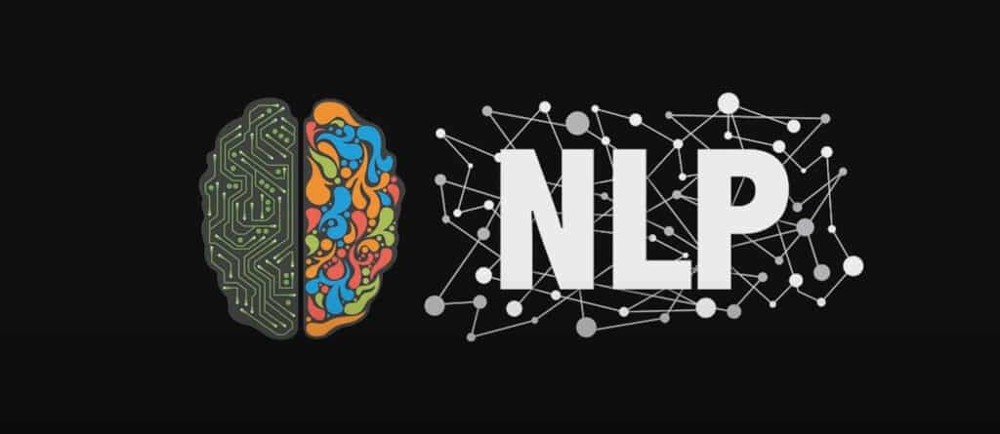
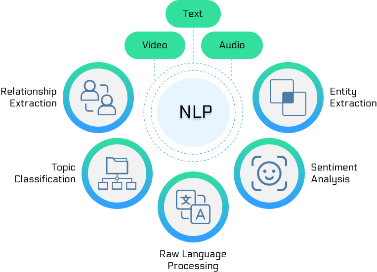

2. NLP 简介原文↗
自然语言处理（Natural Language Processing, NLP）是计算机科学、人工智能和语言学的交叉领域，致力于让计算机能够理解、处理和生成人类的自然语言。
核心目标：
- 理解：让计算机能够理解人类语言的含义
- 处理：对文本和语音进行分析、转换和操作
- 生成：让计算机能够产生自然、流畅的人类语言

自然语言的特点
人类语言具有以下独特特征，这些特征使得NLP成为一个极具挑战性的领域：
1. 歧义性（Ambiguity）
- 词汇歧义：一个词有多种含义
- 例："bank" 可以指金融机构，也可以指河岸
- 句法歧义：句子的语法结构可以有多种解释
- 例："我看见了那个拿着望远镜的人"（是人拿着望远镜，还是我用望远镜看见人？）
- 语义歧义：句子的整体含义不明确
- 例："他们买了苹果"（是水果还是苹果公司的产品？）
2. 上下文依赖性（Context Dependency）
- 同一个词或句子在不同语境中含义不同
- 例："这个想法很cool"中的"cool"表示很棒，而"今天很cool"表示凉爽
3. 创新性与变化性
- 语言不断发展，新词汇、新表达方式层出不穷
- 网络用语、流行语的快速传播
- 例：从"给力"到"yyds"（永远的神）
4. 文化和社会背景
- 语言承载着深厚的文化内涵
- 同一语言在不同地区有方言差异
- 例：中文的"吃了吗？"不仅是询问，更是一种问候方式
5. 非标准化
- 口语化表达、缩写、错别字
- 语法不规范、句子不完整
- 例：微博、聊天记录中的非正式表达
NLP的核心任务
1. 基础任务
- 分词（Tokenization）：将文本分解为有意义的单元
- 词性标注（POS Tagging）：标识每个词的语法类别
- 句法分析（Parsing）：分析句子的语法结构
- 命名实体识别（NER）：识别人名、地名、机构名等
2. 理解任务
- 语义角色标注：识别句子中的语义关系
- 共指消解：确定文本中指向同一实体的不同表达
- 关系抽取：识别实体间的语义关系
- 事件抽取：从文本中抽取事件信息
3. 应用任务
- 文本分类：将文本归类到预定义类别
- 情感分析：判断文本的情感倾向
- 机器翻译：将一种语言翻译成另一种语言
- 文本摘要：生成文本的简洁总结
- 问答系统：根据问题检索或生成答案

NLP 的发展历程
第一阶段：规则基础方法时代（1950s-1980s）
特点：
- 基于人工制定的语法规则和知识库
- 专家系统方法占主导地位
- 处理能力有限，但在特定领域表现较好
代表性工作：
- 1950年 - 图灵测试提出，为机器智能评估奠定基础
- 1954年 - Georgetown-IBM实验，首次机器翻译尝试
- 1960s - ELIZA聊天机器人，使用模式匹配技术
- 1970s - 语法分析器的发展，如ATN（增强转移网络）
典型系统：
- SHRDLU（1970）：在积木世界中理解和执行自然语言指令
- LUNAR（1972）：回答关于月球岩石的问题
局限性：
- 规则覆盖面有限，难以处理语言的复杂性
- 维护成本高，扩展性差
- 无法很好处理歧义和异常情况
第二阶段：统计方法时代（1980s-2010s）
特点：
- 基于大规模语料库的统计学习方法
- 机器学习算法的广泛应用
- 数据驱动的方法论
关键技术发展：
1980s-1990s：统计方法兴起
- 隐马尔可夫模型（HMM）：用于词性标注、语音识别
- 概率上下文无关文法（PCFG）：用于句法分析
- 统计机器翻译：基于短语和句子对齐
2000s：机器学习方法成熟
- 支持向量机（SVM）：在文本分类中表现优异
- 条件随机场（CRF）：用于序列标注任务
- 朴素贝叶斯：简单有效的分类方法
- 最大熵模型：处理多特征问题
重要里程碑：
- 1988年 - Brown语料库发布，推动统计NLP发展
- 1993年 - Penn Treebank发布，为句法分析提供标准数据
- 2000年 - WordNet发布，提供大规模词汇语义网络
- 2005年 - Google发布统计机器翻译系统
优势：
- 能够处理大规模真实文本
- 具有一定的泛化能力
- 可以自动从数据中学习模式
局限性：
- 需要大量标注数据
- 特征工程工作量大
- 难以捕捉深层语义信息
第三阶段：深度学习时代（2010s-2020s）
特点：
- 神经网络模型的复兴和发展
- 端到端的学习方法
- 表示学习的突破
关键技术发展：
2010s初期：神经网络复兴
- 2010年 - 循环神经网络（RNN）在语言建模中的应用
- 2013年 - Word2Vec发布，词向量表示的突破
- 2014年 - Sequence-to-Sequence模型，机器翻译的革命
2010s中期：注意力机制
- 2015年 - 注意力机制的提出和应用
- 2016年 - 神经机器翻译达到实用水平
- 2017年 - Transformer架构发布，"Attention is All You Need"
2010s后期：预训练模型
- 2018年 - BERT发布，双向预训练的突破
- 2019年 - GPT-2发布，大规模生成模型
- 2020年 - GPT-3发布，展现惊人的语言能力
重要突破：
- 词向量技术：Word2Vec, GloVe, FastText
- 序列模型：LSTM, GRU, 双向RNN
- 注意力机制：解决长序列依赖问题
- Transformer架构：并行化训练，效果显著提升
- 预训练模型：BERT, GPT系列，通用语言理解
第四阶段：大语言模型时代（2020s至今）
特点：
- 模型规模急剧增长
- 通用人工智能的曙光
- 少样本和零样本学习能力
关键发展：
- 2020年 - GPT-3（1750亿参数）展现强大的few-shot学习能力
- 2021年 - PaLM（5400亿参数）在多项任务上达到新高度
- 2022年 - ChatGPT发布，引发AI应用热潮
- 2023年 - GPT-4发布，多模态能力显著提升
- 2024年至今 - Claude, Gemini等竞争对手崛起
技术特点：
- 规模效应：模型参数量从亿级增长到万亿级
- 涌现能力：模型在达到某个规模后表现出意想不到的能力
- 多模态融合：文本、图像、音频的统一处理
- 指令跟随：通过指令微调提升模型的可控性
NLP的主要应用领域

机器翻译（Machine Translation）
发展历程：
- 统计机器翻译（SMT）：基于短语对齐和统计模型
- 神经机器翻译（NMT）：端到端的神经网络方法
- 大模型翻译：GPT-3/4等大模型展现的翻译能力
技术挑战：
- 语言对之间的差异性
- 上下文理解和保持
- 专业领域术语翻译
- 语言风格和文化适应
应用实例：
- Google Translate、百度翻译
- 实时语音翻译
- 文档翻译服务
- 跨语言信息检索
搜索引擎与信息检索
核心技术：
- 查询理解：理解用户搜索意图
- 文档排序：根据相关性排序搜索结果
- 语义匹配：超越关键词的语义相似度计算
- 个性化推荐：基于用户历史和偏好
技术发展：
- 从关键词匹配到语义理解
- 从静态排序到动态个性化
- 从文本搜索到多模态搜索
代表系统：
- Google搜索的RankBrain算法
- 百度的ERNIE在搜索中的应用
- Bing Chat的对话式搜索
智能客服与对话系统
系统类型：
- 任务导向型：完成特定任务（订票、查询等）
- 闲聊型：进行开放域对话
- 混合型：结合任务完成和闲聊功能
关键技术：
- 意图识别：理解用户的真实意图
- 槽位填充：提取任务相关的关键信息
- 对话管理：控制对话流程和状态
- 回复生成：生成自然、相关的回复
应用场景：
- 银行、电商的智能客服
- 智能音箱（Alexa, Siri）
- 聊天机器人
- 虚拟助手
文本分析与情感分析
文本分析任务：
- 主题分类：将文档归类到主题类别
- 关键词提取：识别文档的核心词汇
- 文本聚类：将相似文档分组
- 趋势分析：分析文本内容的时间变化
情感分析层次：
- 文档级：整个文档的总体情感
- 句子级：每个句子的情感倾向
- 方面级：针对特定方面的情感
- 细粒度：情感的强度和复杂性
商业应用：
- 社交媒体监控
- 产品评论分析
- 品牌声誉管理
- 股票市场情感指标
信息抽取
抽取任务：
- 命名实体识别：人名、地名、机构名等
- 关系抽取：实体间的语义关系
- 事件抽取：事件的参与者、时间、地点等
- 属性抽取：实体的特征属性
技术方法：
- 基于规则的模式匹配
- 监督学习方法
- 远程监督和弱监督
- 预训练模型微调
应用价值：
- 知识图谱构建
- 智能问答系统
- 新闻事件监控
- 金融风险分析
自动摘要
摘要类型：
- 抽取式摘要：从原文中选择重要句子
- 生成式摘要：生成新的概括性文本
- 混合式摘要：结合抽取和生成方法
技术挑战：
- 重要信息的识别
- 摘要的连贯性和可读性
- 多文档摘要的一致性
- 摘要长度的控制
应用场景：
- 新闻摘要
- 学术论文摘要
- 法律文档摘要
- 会议纪要生成
NLP 面临的主要挑战
语言的歧义性
词汇歧义（Lexical Ambiguity）
- 一词多义：
- "打"：击打、购买、开启等
- "行"：可以/银行/行走等
- 同音异义：
- 中文："的、地、得"的使用
- 英文："there, their, they're"
句法歧义（Syntactic Ambiguity）
- 修饰关系不明：
- "美丽的花儿的香味"（是花儿美丽还是香味美丽？）
- 结构分析多样：
- "我看见了拿着雨伞的女孩"
语义歧义（Semantic Ambiguity）
- 指代不明：
- "李明对张华说他很聪明"（谁聪明？）
- 范围歧义：
- "所有学生都不喜欢这个老师"
解决方法：
- 上下文信息的利用
- 语言模型的概率判断
- 知识库的辅助
- 多任务学习
上下文理解
局部上下文
- 句子内部的语义依赖
- 短语和从句的理解
- 词汇之间的语义关系
全局上下文
- 段落和文档级别的语义连贯
- 话题的连续性
- 长距离的语义依赖
对话上下文
- 多轮对话的历史信息
- 隐含信息的推理
- 对话意图的演变
技术挑战：
- 长距离依赖：传统RNN难以处理长序列
- 语义连贯性：保持生成文本的逻辑一致性
- 常识推理：需要大量背景知识
解决方案：
- 注意力机制和Transformer
- 预训练语言模型
- 知识增强的模型
- 多模态信息融合
文化和语言差异
跨语言挑战
- 语言系谱差异：
- 汉藏语系 vs 印欧语系
- 形态变化丰富 vs 语序重要
- 书写系统差异：
- 字符集大小不同
- 分词方式不同
文化背景
- 习语和俗语：
- "画蛇添足" vs "don't count your chickens before they hatch"
- 文化特有表达：
- 中文的"面子"概念
- 日语的敬语系统
社会语言学因素
- 方言差异：
- 普通话 vs 各地方言
- 标准英语 vs 方言英语
- 语域变化：
- 正式 vs 非正式语体
- 口语 vs 书面语
解决策略：
- 多语言预训练模型
- 跨语言迁移学习
- 文化适应性调整
- 本地化数据收集
数据稀缺问题
低资源语言
- 全球7000多种语言，但只有少数拥有丰富的数字资源
- 濒危语言的保护和研究
- 方言和少数民族语言
专业领域
- 医学、法律等专业领域的术语
- 行业特定的表达方式
- 标注数据获取困难
新兴领域
- 新技术产生的新词汇
- 社交媒体的新表达
- 跨文化交流的新形式
时间演变
- 语言的历史变迁
- 新词汇的快速涌现
- 语义的渐进变化
解决方案：
- 迁移学习：从高资源语言迁移到低资源语言
- 数据增强：通过各种技术扩充训练数据
- 少样本学习：在少量样本下快速适应
- 无监督和自监督学习：减少对标注数据的依赖
- 众包标注：利用群体智慧收集数据
- 合成数据：通过规则或模型生成训练数据
计算复杂性
模型规模挑战
- 参数量爆炸式增长（GPT-3: 1750亿参数）
- 训练成本急剧上升
- 推理延迟和资源消耗
实时性要求
- 搜索引擎的毫秒级响应
- 对话系统的实时交互
- 移动设备的资源限制
可扩展性问题
- 处理海量用户请求
- 多语言、多任务的统一处理
- 个性化服务的计算需求
评估和量化难题
主观性问题
- 文本质量的主观判断
- 翻译质量的文化差异
- 创意写作的评价标准
评估指标局限
- BLEU、ROUGE等指标的不完善
- 自动评估与人工评估的差异
- 多维度评估的复杂性
基准数据集
- 数据集的代表性问题
- 评估任务与实际应用的差距
- 数据集的时效性和更新
总结与展望
自然语言处理作为人工智能的核心分支，经历了从规则驱动到数据驱动，再到大模型引领的发展历程。每个阶段都有其独特的技术特点和历史贡献。
当前状态：
- 大语言模型展现出令人惊叹的语言理解和生成能力
- 多模态融合成为新的发展方向
- 应用领域不断扩展，商业价值日益凸显
未来趋势：
- 通用人工智能：向更通用、更智能的AI系统发展
- 多模态融合：文本、视觉、听觉的全面整合
- 个性化服务：更精准的个性化语言理解和生成
- 可解释性：提高模型决策过程的透明度
- 效率优化：在保持性能的同时降低计算成本
- 伦理和安全：确保AI系统的公平、安全和可控
学习建议：
对于NLP的学习者，建议：
- 扎实基础：深入理解语言学和计算机科学基础
- 实践导向：通过项目实践加深理解
- 跟踪前沿：关注最新技术发展和研究动态
- 跨学科思维：结合语言学、心理学、社会学等多学科知识
- 工程能力：培养将研究成果转化为实际应用的能力
自然语言处理的未来充满机遇和挑战，随着技术的不断进步，我们有理由相信机器理解和生成人类语言的能力将继续提升，为人类社会带来更多便利和价值。
 Linux 命令大全
Linux 命令大全